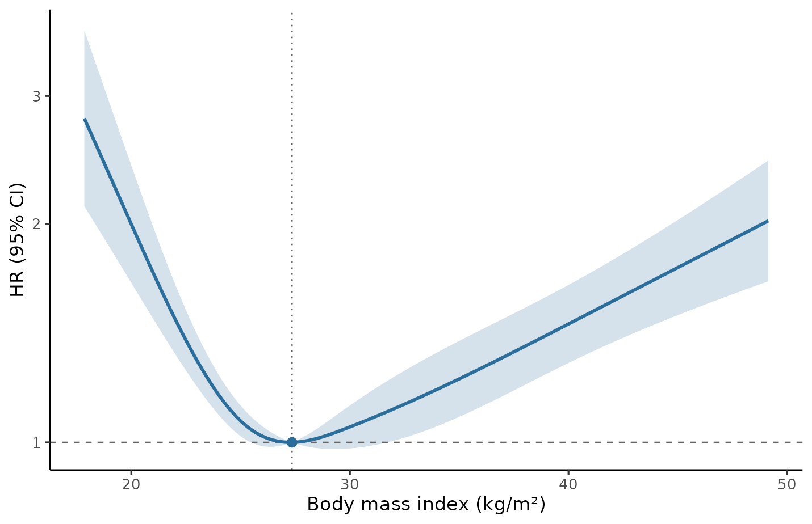
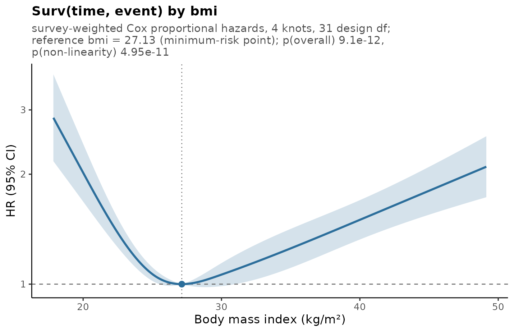
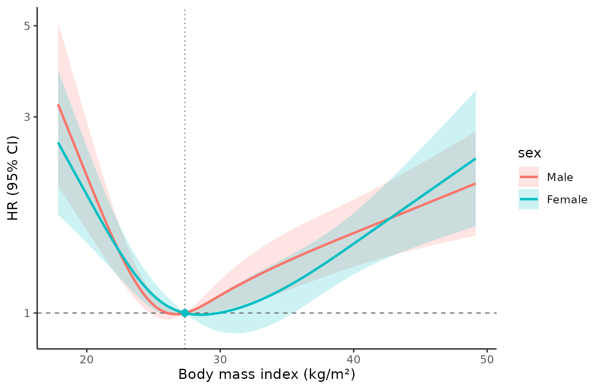
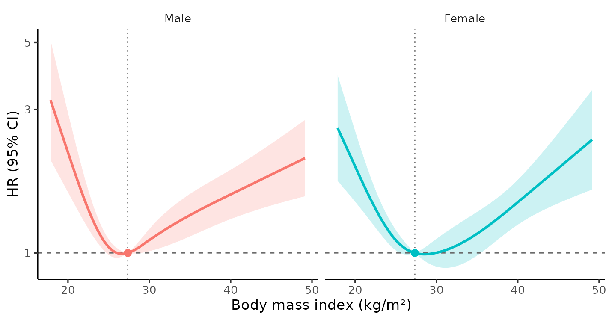

Why splines, and why they are awkward here
Real exposure–outcome relationships are rarely straight lines. The usual workarounds all cost something: categorising a continuous exposure throws away information and power, assuming linearity misspecifies the model, and polynomials behave badly at the extremes. Restricted cubic splines fit a smooth curve that is constrained to be linear beyond the outer knots, which keeps the tails stable while leaving the middle flexible.
Complex surveys such as NHANES make this awkward. Valid analysis needs three design features:
- sampling weights, without which point estimates are biased for the population,
- clustering and stratification, without which standard errors — and therefore every confidence interval and p-value — are wrong.
rms, the natural home of restricted cubic splines in R,
does not know about any of them. survey handles all three
but has no spline helper. svyrcs is the bridge: the spline
is fitted inside a survey model, so estimates use
the weights and the confidence band uses Taylor linearisation on the
design degrees of freedom.
The data
The package ships nhanes_bmi: adults examined in NHANES
2005–2006 and 2007–2008, linked to the NCHS 2019 Linked Mortality File.
Both cycles are included in full, so every sampling stratum and PSU is
intact.
str(nhanes_bmi, max.level = 1, give.attr = FALSE)
#> 'data.frame': 10617 obs. of 16 variables:
#> $ seqn : int 31139 31143 31167 31192 31265 31280 31396 31464 31591 31681 ...
#> $ cycle : Factor w/ 2 levels "2005-2006","2007-2008": 1 1 1 1 1 1 1 1 1 1 ...
#> $ psu : int 1 1 1 1 1 1 1 1 1 1 ...
#> $ strata : int 44 44 44 44 44 44 44 44 44 44 ...
#> $ weight : num 2982 15599 31290 27188 2754 ...
#> $ age : int 18 19 37 60 19 60 55 64 51 22 ...
#> $ sex : Factor w/ 2 levels "Male","Female": 2 1 1 2 1 2 2 1 1 1 ...
#> $ race : Factor w/ 4 levels "Hispanic","Non-Hispanic Black",..: 1 3 3 3 2 3 1 3 2 2 ...
#> $ bmi : num 29.4 22.6 34.4 35.6 22.7 ...
#> $ tchol : int NA 108 202 245 NA 218 219 190 164 195 ...
#> $ hdl : int NA 44 37 66 NA 37 65 57 61 41 ...
#> $ glucose : num NA NA 99 NA NA 100 97 NA NA NA ...
#> $ statin_use: int 0 0 0 1 0 0 0 0 0 0 ...
#> $ time : num 14.8 14.8 14.8 14.8 14.8 ...
#> $ event : int 0 0 0 0 0 0 0 0 1 0 ...
#> $ high_chol : int NA 0 0 1 NA 0 0 0 0 0 ...Build the design exactly as you would for any other survey analysis. Everything downstream inherits from it, including the degrees of freedom.
design <- svydesign(
id = ~psu, strata = ~strata, weights = ~weight,
nest = TRUE, data = nhanes_bmi
)
degf(design)
#> [1] 31Thirty-one degrees of freedom, not ten thousand. That single number is the reason a survey analysis cannot borrow its confidence intervals from an ordinary model fit: the variance is estimated from 62 PSUs in 31 strata, and the intervals have to reflect that.
A first model
One call. The exposure enters through rcs(); everything
else is an ordinary model formula.
fit <- svyrcs(
Surv(time, event) ~ rcs(bmi, 4) + age + sex + race,
design = design
)
fit
#> Restricted cubic spline on a complex survey design
#>
#> Model survey-weighted Cox proportional hazards
#> Outcome Surv(time, event)
#> Exposure bmi, 4 knots at 19.78, 25.22, 29.71, 40.67 (weighted quantiles)
#> Sample 10,617 observations, 1,893 events, 31 design df
#> Reference bmi = 27.35 (weighted median), HR = 1
#>
#> Overall association F = 43.58 on 3 and 31 df, p = 3.12e-11
#> Non-linearity F = 51.70 on 2 and 31 df, p = 1.34e-10The Surv() response selected a survey-weighted Cox
model, so the effect measure is a hazard ratio. Two p-values
are reported, and they answer different questions:
- Overall association — are the spline terms jointly zero? That is, is BMI associated with mortality at all?
- Non-linearity — are the non-linear spline terms jointly zero? A small value here says a straight line would not have done, and justifies showing a curve.
Both are design-based F tests on (df1, 31)
degrees of freedom, which is the survey convention and matches
survey::regTermTest(). A chi-square version is also stored
in fit$tests, but it is anti-conservative with only 31
design degrees of freedom.
Looking at the curve
plot(fit, xlab = "Body mass index (kg/m²)")
The familiar J: elevated mortality at low BMI, a minimum in the high twenties, and a rise through the obese range. The dotted vertical line marks the reference value, where the hazard ratio is 1 by construction.
summary() adds what is hard to read off the figure —
where the curve turns, and over which stretches of BMI the confidence
band actually excludes 1.
summary(fit)
#> Restricted cubic spline on a complex survey design
#>
#> Model survey-weighted Cox proportional hazards
#> Outcome Surv(time, event)
#> Exposure bmi, 4 knots at 19.78, 25.22, 29.71, 40.67 (weighted quantiles)
#> Sample 10,617 observations, 1,893 events, 31 design df
#> Reference bmi = 27.35 (weighted median), HR = 1
#>
#> Overall association F = 43.58 on 3 and 31 df, p = 3.12e-11
#> Non-linearity F = 51.70 on 2 and 31 df, p = 1.34e-10
#>
#> Curve shape
#> Lowest bmi = 27.28, HR = 1.00 (0.998, 1.00)
#> Highest bmi = 17.85, HR = 2.79 (2.11, 3.69)
#> 95% band excludes HR = 1 over:
#> bmi 17.85 to 25.40 (HR > 1)
#> bmi 31.84 to 49.14 (HR > 1)For numbers to quote in a paper, ask for them directly:
predict(fit, x = c(18.5, 25, 30, 35, 40))
#> x estimate conf.low conf.high se
#> 1 18.5 2.524568 1.9652971 3.242993 0.12278745
#> 2 25.0 1.070477 1.0198242 1.123646 0.02376758
#> 3 30.0 1.050115 0.9809034 1.124211 0.03343010
#> 4 35.0 1.222948 1.0841540 1.379510 0.05906513
#> 5 40.0 1.455663 1.2861874 1.647470 0.06069052Choosing the reference
A spline curve is only defined up to a reference: every estimate is a
contrast against some exposure value. svyrcs supports the
choices seen in the literature, and the choice is purely presentational
— it shifts the curve without changing its shape or either
p-value.
fits <- lapply(
c("median", "min", "max"),
function(r) svyrcs(Surv(time, event) ~ rcs(bmi, 4) + age + sex,
design = design, ref = r)
)
vapply(fits, function(f) f$ref$value, numeric(1))
#> [1] 27.3500 27.1304 17.8500-
"median"(the default) is the survey-weighted population median — not the median of the unweighted sample, which would be a property of who happened to be sampled. -
"min"anchors at the minimum-risk point, so the whole curve reads as “excess risk relative to the healthiest value”. This is the most common choice in the obesity literature. -
"max","mean","quantile"(withref_prob), or any number you like are also accepted.
plot(fits[[2]], xlab = "Body mass index (kg/m²)", title = TRUE)
Other outcomes
The effect measure follows from the model, so nothing about the workflow changes.
# binary outcome: odds ratio
svyrcs(high_chol ~ rcs(bmi, 4) + age + sex, design = design,
family = quasibinomial())
#> Restricted cubic spline on a complex survey design
#>
#> Model survey-weighted GLM (quasibinomial, logit link)
#> Outcome high_chol
#> Exposure bmi, 4 knots at 19.78, 25.22, 29.71, 40.67 (weighted quantiles)
#> Sample 9,968 observations, 31 design df
#> Reference bmi = 27.35 (weighted median), OR = 1
#> Dropped 649 rows with missing values
#>
#> Overall association F = 19.58 on 3 and 31 df, p = 2.61e-07
#> Non-linearity F = 28.03 on 2 and 31 df, p = 1.12e-07
# continuous outcome: mean difference
svyrcs(tchol ~ rcs(bmi, 4) + age + sex, design = design)
#> Restricted cubic spline on a complex survey design
#>
#> Model survey-weighted GLM (gaussian, identity link)
#> Outcome tchol
#> Exposure bmi, 4 knots at 19.78, 25.22, 29.71, 40.67 (weighted quantiles)
#> Sample 9,968 observations, 31 design df
#> Reference bmi = 27.35 (weighted median), Difference = 0
#> Dropped 649 rows with missing values
#>
#> Overall association F = 39.87 on 3 and 31 df, p = 9.34e-11
#> Non-linearity F = 55.21 on 2 and 31 df, p = 6.07e-11Use quasipoisson() for rates, which gives rate ratios.
The quasi- families are the right choice under a survey design: the
dispersion parameter is not meaningful when the “counts” are weighted,
and survey handles the variance itself.
Does the curve differ by subgroup?
Cross the spline with a grouping variable and svyrcs()
fits one model, returning a curve per group:
by_sex <- svyrcs(Surv(time, event) ~ rcs(bmi, 4) * sex + age, design = design)
by_sex
#> Restricted cubic spline on a complex survey design
#>
#> Model survey-weighted Cox proportional hazards
#> Outcome Surv(time, event)
#> Exposure bmi, 4 knots at 19.78, 25.22, 29.71, 40.67 (weighted quantiles)
#> Modifier sex, 2 levels, reference Male
#> Sample 10,617 observations, 1,893 events, 31 design df
#> Reference bmi = 27.35 (weighted median), HR = 1
#>
#> Overall association F = 26.40 on 6 and 31 df, p = 6.78e-11
#> Non-linearity F = 29.46 on 4 and 31 df, p = 3.64e-10
#> Interaction F = 0.8453 on 3 and 31 df, p = 0.48
#> Shape interaction F = 1.267 on 2 and 31 df, p = 0.296
#>
#> Per group overall p non-linear p
#> Male 2.92e-06 3.49e-06
#> Female 7.94e-06 5.05e-06
plot(by_sex, xlab = "Body mass index (kg/m²)")
Two questions get separate answers. Interaction asks whether the association differs between groups at all. Shape interaction drops the linear interaction term, so it asks the narrower question: does the curvature differ, or is one curve simply a shifted copy of the other?
Here neither is close to significant, and that is worth dwelling on. The two curves in the figure look different — the minimum sits a couple of BMI units higher in women, and the male curve climbs sooner — but with 31 design degrees of freedom that separation is well inside the noise. Reporting “the association was stronger in men” from this fit would not be supported. Subgroup curves are easy to over-read, which is exactly why the interaction p-value is printed next to them.
facet = TRUE gives each group its own panel when the
bands overlap too much to read:
plot(by_sex, facet = TRUE, xlab = "Body mass index (kg/m²)")
Some details worth knowing:
- One model, not several. Covariate effects —
agehere — are shared across groups. Fitting each subgroup separately would estimate them independently and could not produce an interaction test at all. - All groups share one reference value, so the curves are comparable.
With
ref = "min"the reference is the minimum-risk point of the reference level, and the output names it. - The standard error for a non-reference group accounts for the covariance between the main and interaction coefficients. Adding the two variances separately, which is the obvious shortcut, gives the wrong interval.
- The modifier must be a factor, character or logical. Continuous effect modification is not supported.
-
predict(fit, x = ..., group = "Female")gives numbers for one group.
Missing data
The shipped data has missing cholesterol for 649 people. Everything
above quietly dropped them. Multiple imputation is the usual
alternative, and svyrcs consumes the result: build the
imputations however you like, wrap them in
mitools::imputationList(), and pass the resulting
design.
library(mice)
library(mitools)
vars <- c("age", "sex", "race", "bmi", "tchol", "hdl", "time", "event")
imp <- mice(nhanes_bmi[vars], m = 5, method = "pmm", maxit = 3, printFlag = FALSE, seed = 1)
completed <- lapply(1:5, function(i) {
cbind(complete(imp, i), nhanes_bmi[c("psu", "strata", "weight")])
})
mi_design <- svydesign(
id = ~psu, strata = ~strata, weights = ~weight,
nest = TRUE, data = imputationList(completed)
)
fit_mi <- svyrcs(Surv(time, event) ~ rcs(bmi, 4) + age + sex + tchol, design = mi_design)
fit_mi
#> Restricted cubic spline on a complex survey design
#>
#> Model survey-weighted Cox proportional hazards
#> Outcome Surv(time, event)
#> Exposure bmi, 4 knots at 19.78, 25.22, 29.71, 40.67 (weighted quantiles)
#> Sample 10,617 observations, 1,893 events, 31 design df
#> Reference bmi = 27.35 (weighted median), HR = 1
#> Imputed m = 5, fraction of missing information 7.4e-05 to 0.00097 (median 0.00045)
#> degrees of freedom reduced from 31 by Barnard-Rubin
#>
#> Overall association F = 45.93 on 3 and 29.2 df, p = 3.61e-11
#> Non-linearity F = 53.27 on 2 and 29.2 df, p = 1.83e-10Two things are worth understanding here.
Knots and the reference are fixed before any model is fitted, as the average of the survey-weighted quantiles across imputations. This is not a convenience: if each imputation chose its own knots, the five coefficient vectors would be estimates of five different parameterisations and Rubin’s rules would not apply to them.
The degrees of freedom are not
mitools’. MIcombine() reports
(m-1)(1+1/r)^2, which has no upper bound — on this design,
which has 31 degrees of freedom, it returns numbers in the thousands and
sometimes Inf. Feeding that to a t quantile would
give confidence intervals far too narrow, the same error as using a
normal quantile but worse. svyrcs applies the Barnard-Rubin
correction, which is bounded by the complete-data degrees of
freedom:
head(predict(fit_mi, x = c(18, 22, 27, 35, 45)))
#> x estimate conf.low conf.high se df fmi
#> 1 18 2.751244 2.0973163 3.609062 0.132728379 29.16176 0.0005025178
#> 2 22 1.480123 1.3248047 1.653651 0.054217717 29.16678 0.0003313869
#> 3 27 1.000361 0.9914646 1.009338 0.004369014 29.17236 0.0001405740
#> 4 35 1.229373 1.0900634 1.386487 0.058818934 29.16485 0.0003971519
#> 5 45 1.736036 1.4969291 2.013335 0.072471578 29.14803 0.0009679880The df column sits at or below 31 and drops where the
fraction of missing information (fmi) is highest. When
nothing in the model is imputed, fmi is zero,
df is exactly 31, and the result is identical to the
complete-data fit.
The joint tests are treated the same way. Their denominator degrees of freedom are adjusted rather than taken from the usual multiple-imputation rule, which is derived from the imputation structure alone and ignores the survey design.
Knots
Four knots at Harrell’s recommended quantiles is the default, and is a reasonable choice for most sample sizes. More knots buy flexibility at the cost of stability.
fit$knots
#> [1] 19.78 25.22 29.71 40.67
svyrcs(Surv(time, event) ~ rcs(bmi, 5) + age, design = design)$knots
#> [1] 19.78 24.13 27.35 31.22 40.67
svyrcs(Surv(time, event) ~ rcs(bmi, c(20, 25, 30, 40)) + age, design = design)$knots
#> [1] 20 25 30 40By default the quantiles are survey-weighted, so
knot placement reflects the population distribution.
weighted_knots = FALSE reproduces the unweighted placement
you would get from a naive script.
Whatever you choose, the knots are stored on the fitted model, so predictions on new data can never be made against silently re-derived knots:
Working from a model you fitted yourself
If you need a specification svyrcs() does not build — a
stratified Cox model, an unusual family, extra arguments — fit it
yourself and hand it over:
m <- svycoxph(Surv(time, event) ~ rcs(bmi, 4) + age + strata(sex), design = design)
head(svyrcs_curve(m, "bmi", ref = "min", n = 5))
#> x estimate conf.low conf.high se
#> 1 17.8500 2.849643 2.169771 3.742544 0.13364554
#> 2 25.6725 1.032706 1.000059 1.066418 0.01575051
#> 3 33.4950 1.197341 1.060762 1.351506 0.05938477
#> 4 41.3175 1.586269 1.393807 1.805306 0.06341997
#> 5 49.1400 2.109713 1.743401 2.552992 0.09350953How the estimates are computed
Worth knowing, because it differs from the hand-rolled scripts that circulate for this task.
The curve is a contrast in the linear predictor between exposure
x and the reference x0. Because the linear
predictor is additive and every covariate takes the same value
at both points, all covariate contributions cancel exactly. Only the
spline columns remain:
dB = B(x) − B(x₀)
effect = dB β, var(effect) = dB V dBᵀwith β and V the spline coefficients and
their design-based covariance. This is exact, not an approximation — it
reproduces predict(type = "lp") differences to about 1e-15
— and it means there is no need to build a prediction grid with
covariates fixed at reference values. That matters practically: such
grids break when a covariate is a factor with a level absent from the
grid, and they invite the error of comparing across different covariate
profiles.
Confidence intervals then use a t quantile on
degf(design) rather than a normal quantile. With 31 degrees
of freedom that is a 4% wider interval, which is not nothing.
Limitations
- Negative binomial outcomes are not supported:
surveyhas no such family. Usequasipoisson(), whose variance is estimated from the design anyway. - One spline exposure per model. Fit separate models, or use
svyrcs_curve()on your own fit. - Effect modification by a continuous variable, and three-way interactions, are not supported. Group modifiers are (see above).
- Analyses of a subsample with its own weight (for instance the NHANES
fasting subsample) need that subsample’s weight in
svydesign(); the shipped data carries only the MEC exam weight.
References
- Harrell FE Jr. Regression Modeling Strategies. 2nd ed. Springer; 2015.
- Lumley T. Complex Surveys: A Guide to Analysis Using R. Wiley; 2010.
- Binder DA. On the variances of asymptotically normal estimators from complex surveys. International Statistical Review. 1983;51(3):279–292.
- CDC. NHANES tutorials.